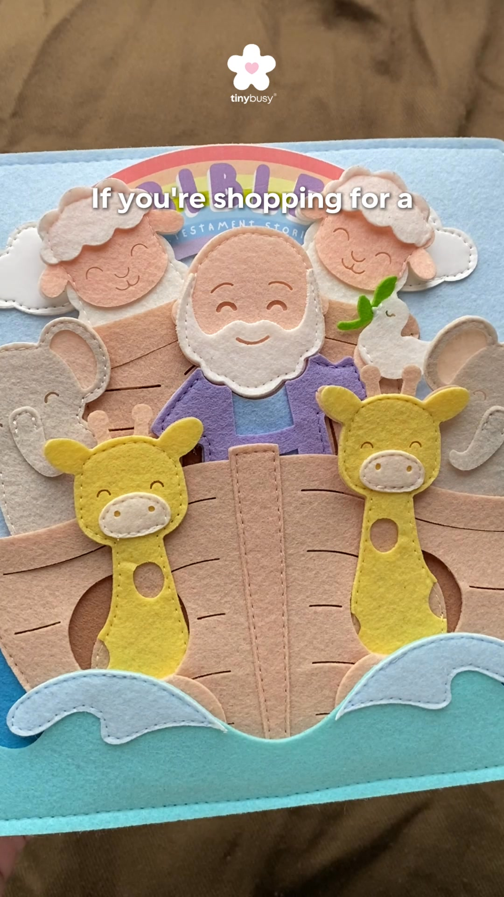
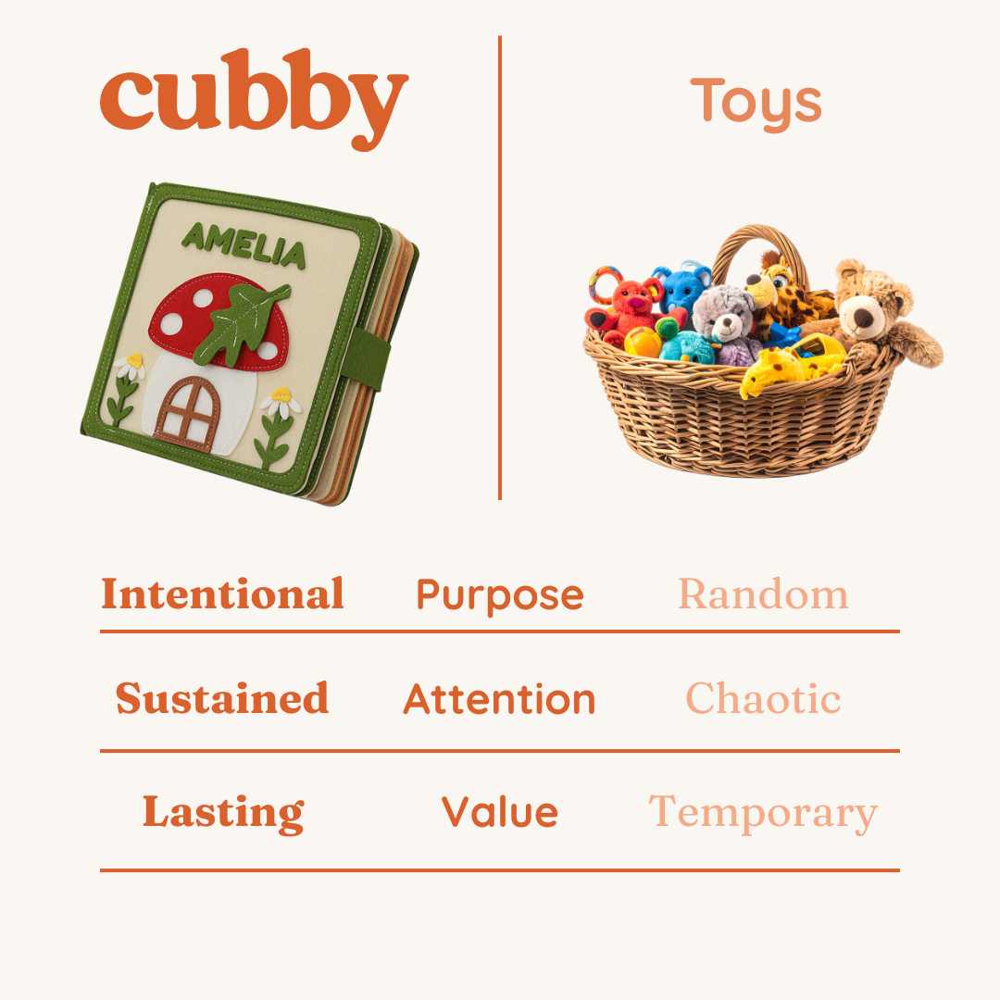
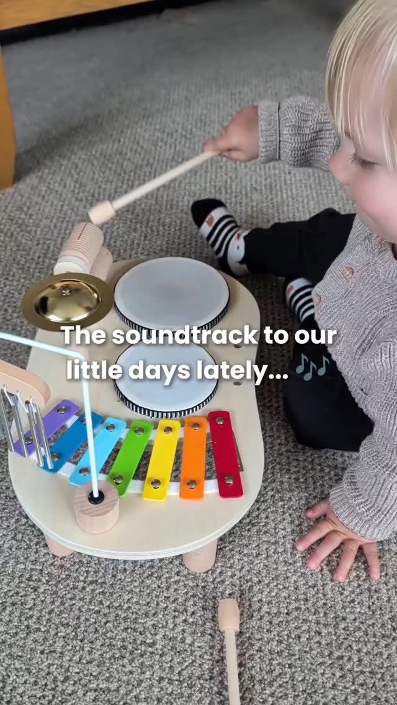

Os que ficam meses no ar mostram a criança concentrada e falam do adulto ("café ainda quente", "ele nem pediu o iPad"). O argumento "educativo" (motricidade fina) aparece em 21 marcas, mas o que diferencia os vencedores é o sossego e a liberdade de mexer ("finalmente um brinquedo que ele pode tocar").
Biblioteca pública, 1.512 anúncios de 459 marcas584 anúncios de 49 marcas do nicho depois de tirar o ruídocriativos salvos em paginas/criativos/
Longevidade = dias desde o início do anúncio ativo mais antigo. Acima de 60 dias, o anúncio já se pagou. A toddla.co combina as duas coisas que importam: anúncio de 99 dias e muito criativo novo (duplicação de 1,4x).
02Ângulos que se repetem entre marcas diferentes
ângulo
motricidade fina
"fine motor skills" em 21 marcas, "hand eye coordination" em 15: o argumento padrão, todo mundo usa. · fonte: cruzamento de 584 anúncios do nicho (swipe.js)
ângulo
mãos pequenas
"little hands" em 17 marcas e "little one" em 10: a linguagem é carinhosa, não técnica. · fonte: cruzamento de 584 anúncios do nicho (swipe.js)
ângulo
sem tela
"screen free" em 15 marcas: a culpa da tela é a dor central. · fonte: cruzamento de 584 anúncios do nicho (swipe.js)
ângulo
sossego do adulto
toddla.co: "Five minutes, coffee still hot", "5pm isn't a crisis anymore". · fonte: cruzamento de 584 anúncios do nicho (swipe.js)
ângulo
o proibido liberado
Lovealotter: "Finally, A Toy They're Allowed To Touch"; toddla.co: "The tree they're allowed to pull". · fonte: cruzamento de 584 anúncios do nicho (swipe.js)
ângulo
presente sem erro
Montessori Paradise e Montessori Generation: "Grandma's Favorite Gift", "10 Genius Gifts for Grandchildren". · fonte: cruzamento de 584 anúncios do nicho (swipe.js)
03Galeria dos 10 criativos mais escalados do mercado
Ordenados por dias no ar (o mais antigo ainda ativo é o vencedor mais provável). Inclui marcas fora do gate de dropship (TinyBusy, Cubby, Montessori Generation, Montessori Toddlers), porque o criativo serve para estudar comunicação.

VÍDEO
#1 · TinyBusy
✝️ Handmade Bible Quiet Book Gifts for Christian Families Faith Based Learning Toy That Builds Fine Motor Skills
Looking for a thoughtful gift for a faith centered home?
🙏🏻 Christian parents often want toys that nurture faith instead of adding more noisy distractions.
✝️ The TinyBusy Bible
Looking for a thoughtful gift for a faith centered home?
🙏🏻 Christian parents often want toys that nurture faith instead of adding more noisy distractions.
✝️ The TinyBusy Bible Quiet Book helps children explore Bible stories while building fine motor skills through faith based learning.
📘 Kids interact with soft pieces to create hands on Bible scenes and discover each story in the Quiet Book.
👧🧒 Ideal for kids ages 2 to 6.
🌸 A meaningful gift for children, grandchildren, or Christian families.
💗 Encouraging young hearts to grow in love for God and His Word.
🌸 Handmade with limited quantities available.
👉 Discover the Bible Quiet Book: https://tinybusy.com/products/bb1
não obtidoa Meta não publica gasto para e-commerce fora da UE
O que isso prova
Que alguém mantém este anúncio no ar há 207 dias.
O que não prova
Quanto vende, quanto gasta ou se dá lucro.
IMAGEM
#2 · Cubby
Personalised Busy Books Made Just for Them
✨ Looking for calm, screen-free play your baby will love?
Personalised Busy Books that help little hands focus and imaginations soar, built for real moments.
🎨 Personalised co
✨ Looking for calm, screen-free play your baby will love?
Personalised Busy Books that help little hands focus and imaginations soar, built for real moments.
🎨 Personalised cover
🧠 Montessori-friendly play
✋ Quiet, screen-free activities
🌈 Choose from 4 magical designs
💛 A keepsake to treasure forever
👉 Shop now at bycubby.com
não obtidoa Meta não publica gasto para e-commerce fora da UE
O que isso prova
Que alguém mantém este anúncio no ar há 182 dias.
O que não prova
Quanto vende, quanto gasta ou se dá lucro.

IMAGEM
#3 · Cubby
Personalised Busy Books Made Just for Them
✨ Looking for calm, screen-free play your baby will love?
Personalised Busy Books that help little hands focus and imaginations soar, built for real moments.
🎨 Personalised co
✨ Looking for calm, screen-free play your baby will love?
Personalised Busy Books that help little hands focus and imaginations soar, built for real moments.
🎨 Personalised cover
🧠 Montessori-friendly play
✋ Quiet, screen-free activities
🌈 Choose from 4 magical designs
💛 A keepsake to treasure forever
👉 Shop now at bycubby.com
não obtidoa Meta não publica gasto para e-commerce fora da UE
O que isso prova
Que alguém mantém este anúncio no ar há 140 dias.
O que não prova
Quanto vende, quanto gasta ou se dá lucro.

VÍDEO
#4 · Montessori Toddlers
(anúncio dinâmico de catálogo)
Ad | Gifted ✨ I’ve always loved toys that leave room for imagination, & this little music set from @montessoritoddlersglobal has quickly become one of those things Jasper keeps com
Ad | Gifted ✨ I’ve always loved toys that leave room for imagination, & this little music set from @montessoritoddlersglobal has quickly become one of those things Jasper keeps coming back to again & again 🥹🎶
Watching him explore different sounds, concentrate so carefully, & lose himself in play has been so lovely to watch. The sweetest little reminder that they really don’t need much to create joy 🤍
Plus, it's sweet sounds are pleasing for the grown ups too - a parenting win, right there! 🤭😌
#montessoritoddlers #toddlerplay #montessoriplay #ukmums #toddleractivities
não obtidoa Meta não publica gasto para e-commerce fora da UE
O que isso prova
Que alguém mantém este anúncio no ar há 126 dias.
O que não prova
Quanto vende, quanto gasta ou se dá lucro.
VÍDEO
#5 · Lovealotter.com
⭐⭐⭐⭐⭐50% OFF - Today Only!
"😍My grandson absolutely loves this!"
Give your toddler a mini control center for hours of learning and fun, the Montessori Wooden Switch Board is a total hit! 😍🎁
Get it here �
"😍My grandson absolutely loves this!"
Give your toddler a mini control center for hours of learning and fun, the Montessori Wooden Switch Board is a total hit! 😍🎁
Get it here 👉lovealotter.com/switch-board
Get it here 👉lovealotter.com/switch-board
50% off + fast delivery ✈
não obtidoa Meta não publica gasto para e-commerce fora da UE
O que isso prova
Que alguém mantém este anúncio no ar há 121 dias.
O que não prova
Quanto vende, quanto gasta ou se dá lucro.
VÍDEO
#6 · Lovealotter.com
⭐⭐⭐⭐⭐50% OFF - Today Only!
😍 I bought this for my grandson, and went back to order another!
He stays engaged, happy, and learning with zero screen time 🧠✨
This Montessori Felt Board is a lifesaver for bu
😍 I bought this for my grandson, and went back to order another!
He stays engaged, happy, and learning with zero screen time 🧠✨
This Montessori Felt Board is a lifesaver for busy parents and loving grandparents.
⏳ They’re selling fast, almost gone
👉 lovealotter.com/felt-board
50% OFF + fast delivery ✈
não obtidoa Meta não publica gasto para e-commerce fora da UE
O que isso prova
Que alguém mantém este anúncio no ar há 112 dias.
O que não prova
Quanto vende, quanto gasta ou se dá lucro.
VÍDEO
#10 · Lovealotter.com
Finally, A Toy They're Allowed To Touch
"😍My grandkid absolutely loves this!"
Give your toddler a mini control center for hours of learning and fun, the Montessori Wooden Switch Board is a total hit! 😍🎁
Get it here �
"😍My grandkid absolutely loves this!"
Give your toddler a mini control center for hours of learning and fun, the Montessori Wooden Switch Board is a total hit! 😍🎁
Get it here 👉lovealotter.com/switch-board
Get it here 👉lovealotter.com/switch-board
50% off + fast delivery ✈
não obtidoa Meta não publica gasto para e-commerce fora da UE
O que isso prova
Que alguém mantém este anúncio no ar há 107 dias.
O que não prova
Quanto vende, quanto gasta ou se dá lucro.
limiteOs 7 vídeos estão salvos completos; a capa é a imagem de prévia da própria Biblioteca, porque o ffmpeg não está instalado nesta máquina (sem transcrição de áudio). A decodificação abaixo usa a copy real de cada anúncio.
04Anatomia dos vencedores
Os 4 concorrentes mais escalados entre as lojas analisadas, decodificados a partir da copy real dos anúncios.
toddla.co
Big idea
Brinquedo calmo: sem pilha, sem luz piscando, e a criança fica ocupada enquanto o adulto respira.
Gancho
UGC em 1ª pessoa de mãe, com título de diário ("Five minutes, coffee still hot", "i actually cook dinner now"), rodado por 2 perfis de mãe além da página da marca.
Ângulo
No batteries. No flashing lights. Just peace. 💛
Estrutura
Sim: listas "/pages/7-montessori-toys" e "What To Buy the Grandkids This Christmas, From a Preschool Teacher of 28 Years"; o grosso (120 anúncios) vai direto ao produto.
Objeção
"Vai prender a atenção mesmo?", respondida com vídeo de criança concentrada; "é cópia?", respondida com "We got copied" (a marca se posiciona como a original).
Texto na tela / título
No batteries. No flashing lights. Just peace. 💛 · Five minutes, coffee still hot
Tibatoes
Big idea
"O brinquedo sem tela que toda criança precisa": o busy board como substituto do tablet.
Gancho
Uma página de pré-venda por público: TDAH, autismo, viagem de carro, "setembro".
Ângulo
The Screen Free Toy Every Child Needs.
Estrutura
Sim, e é o motor: "/pages/montessori-lander" (59 anúncios), "busy-board-september" (30), "roadtrip" (15), "adhd" (10), "autism" (6).
Objeção
"Vai enjoar em 2 minutos", respondida com a pré-venda por perfil; "e a alfândega?", respondida com tarifas pagas pela loja e 30 dias de devolução.
Texto na tela / título
The Screen Free Toy Every Child Needs. · The Travel Essential Every Parent Needs
Lovealotter
Big idea
Finalmente um brinquedo que ele PODE mexer: os interruptores da casa, liberados.
Gancho
Pergunta de reconhecimento ("Does your toddler touch EVERY switch in the house?") + depoimento ("He didn't even ask for the iPad!").
Ângulo
Finally, A Toy They're Allowed To Touch
Estrutura
Não achado: o anúncio vai direto à página do produto.
Objeção
Preço, respondida com "50% OFF - Today Only" em quase todo título.
Texto na tela / título
Finally, A Toy They're Allowed To Touch · Does your toddler touch EVERY switch in the house?
Montessori Paradise
Big idea
O presente que a avó não se arrepende de comprar.
Gancho
Título de lista para avó ("10 Christmas Gifts Grandma Won't Regret Buying").
Ângulo
10 Christmas Gifts Grandma Won't Regret Buying 🎁
Estrutura
Sim: "/pages/christmas-gifts-grandmas-are-buying" e "/pages/10-guilt-free-toys-to-spoil-your-grandchild" antes do produto.
Objeção
"E se a criança não gostar?", respondida com 45 dias de devolução e "a purchase you will never regret".
Demonstração de produto com criança real brincando (toddla.co, Lovealotter, Montessori Toddlers) domina; UGC em 1ª pessoa de mãe aparece na toddla.co (2 perfis de mãe dedicados); imagem estática de produto com oferta ("50% OFF - Today Only") na Lovealotter; lista de presentes em texto (Montessori Generation, Montessori Paradise). Nenhum usa influenciador famoso: é filmagem caseira de criança, barata de produzir.
06Formato e roteiro
Formato
Roteiro
Uso no seu plano
Vídeo de demonstração (15 a 30s)
criança mexendo num interruptor da casa → mãe tira a mão dela → criança no board, concentrada → café/jantar ao fundo → oferta
anúncio 1 (o proibido liberado)
UGC em 1ª pessoa (20 a 40s)
"5pm used to be a crisis..." → o que mudou → board → 20 minutos de sossego
anúncio 2 (sossego)
Vídeo de prova de segurança (10s)
mão adulta puxa forte cada interruptor → nada sai → tampa da pilha com parafuso
anúncio 3 (a brecha: ninguém mostra)
Lista para avó (imagem ou carrossel)
"The gift grandkids actually play with" → kit → oferta de Natal
anúncio 4 (outubro a dezembro)
Catálogo dinâmico
produto + preço
só depois de 30 vendas (precisa de pixel com dados)
Os roteiros completos ficam na pasta 07-anuncios da marca. Não use promessa médica (TDAH, autismo, "desenvolvimento cerebral"): a Tibatoes usa, e é risco de reprovação e de reclamação.
08Fonte e limites
Gasto e impressões não existem na fonte para anúncio comercial fora da UE. Contagem de anúncio prova que alguém paga para manter o anúncio, não que ele dá lucro. A amostra da Biblioteca vem ordenada por recência; a longevidade foi lida pela data de início. 928 anúncios de ruído (romance, drama, escola Montessori, pet, presente de escalada) foram retirados antes de montar a galeria e o swipe.
observado visto na fontecalculado conta declaradainferido leitura do analistarecomendado ação sugeridanão obtido a fonte não entregou, motivo ao lado